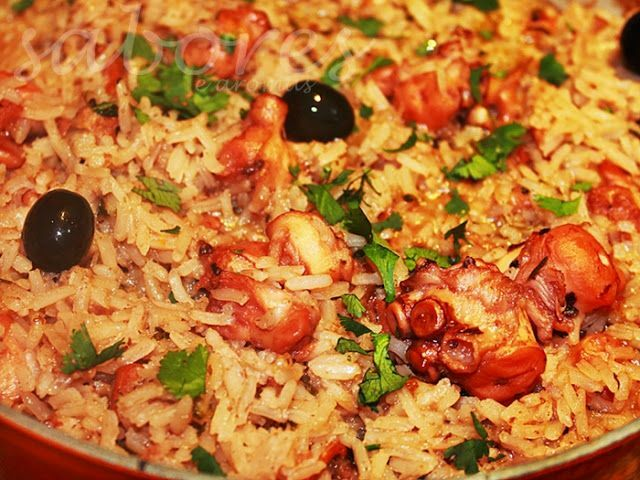

Nutren - Nutrição para todas as fases da vida. | Nestlé

Acessibilidade Preto, branco e amarelo Contraste aumentado Monocromático Escala de cinza invertido Cor invertida Cores originais Ir para o conteúdo [1] Ir para o menu principal [2] Tamanho do texto: A+ | A Acessibilidade deste site Contraste Preto, branco e amarelo Contraste aumentado Monocromático Escala de cinza invertido Cor invertida Cores originais Nestlé Toggle navigation Buscar Toggle navigation A Nestlé Propósito Marcas Promoções Receitas Trabalhe na Nestlé Imprensa Converse com a gente Buscar Olá, Minha Conta Mudar Senha Minhas Amostras Sair Nestlé Com Você Home / Marcas / Nutren Faz bem saber Nutren
Nutrição para todas as fases da vida.
Conheça nossas marcas
Nutren Active
Nutren Beauty
Nutren Celltrient
Nutren Kids
Nutren Protein
Nutren Senior
Receitas Nutren
Vitamina de Nutren kids
00:05 FácilLimonada Suiça Diferente Nutren
00:05 FácilSmoothie de Frutas Nutren
00:05 FácilMude com NesPLAY
Para estimular um dia a dia mais saudável, o app NesPLAY reúne receitas e atividades divertidas para as crianças e a família mudarem hábitos brincando.
Fique por dentro
Que bom que você quer ficar mais perto da Nestlé.
facebook Instagram Linkedin Propósito Trabalhe na Nestlé Fale Conosco Transparência Parceiros Política de privacidade Termos e condições Ajuda Outros sites Receitas Nestlé Nestlé Health Science Nestlé Nutrition Institute Nestlé Nutri Saúde Nestlé Profissionais de Saúde Pediatria Nestlé©2021, Nestlé Brasil Ltda. Todos os direitos reservados.
NestléPrecisa de Ajuda?
Olá, eu sou seu assistente virtual.
Iniciar Chat Não Obrigado "O ministério da saúde informa: o aleitamento materno evita infecções e alergias e é recomendado até os 2 (dois) anos de idade ou mais." "O ministério da saúde informa: após os 6(seis) meses de idade, continue amamentando seu filho e ofereça novos alimentos."Posted by Jack  Read more
Read more  Comments (15)
Comments (15)  2021.03.30 22:13
2021.03.30 22:13